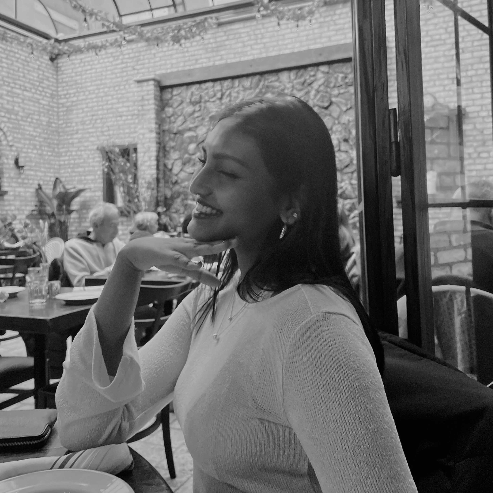

Yamila
pronouns: she/her
Integrated Design and Media
Hello! It's nice to meet everyone, I hope everyone enjoys the podcast:) Just wanted to tell a few things about myself! I grew up in northern Utah, and I think it's definitely influenced my love for hiking, biking, and running. In my free time I also love to sketch, read, and listen to music! (Beabadoobee, Faye Webster, Laufey, and Blood Orange are some of my favorite artists!)

Ashrita
pronouns: she/her
Integrated Design and Media
Hi guys! Here are some fun facts about me, I grew up in Hyderabad, India and I love to play tennis, read books, paint, and draw. Some of my favorite TV shows and movies are Alice in the Borderland, Love Death and Robots, Annihilation, Ready Player One, etc. I also love listening to music whenever I can, my top three songs currently are Blue Loop, Nangs, and Winterfall. Hope you have fun listening to our podcast <3